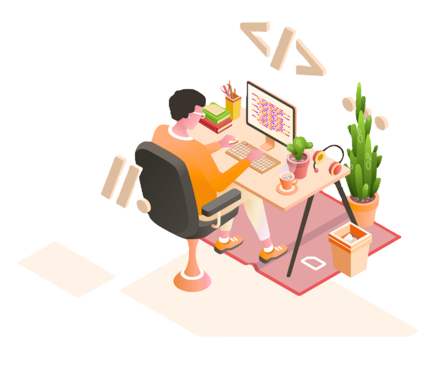
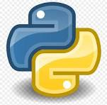

Hi, My name is Prathamesh
and I am a Passionate

Work Experince
Frontend Developer
A Web Developer creates and designs different websites,
rofessionals in this field may also need to be able to ensure sites are compatible with
multiple
types of media.

Python Developer
Develope and maintain Python based application and software systems. Write clean, efficient,
and well documented code. Collaborate with cross- functional teams to design, develope and
deploy software solutions.
Projects
Below are the sample Data Analytics projects Python.IoT Based Bridge Monitoring Projecct
IOT Based Bridge Monitoring System
An IoT based bridge monitoring system is a system that uses wireless sensors and
communication devices to
collect and analyze data about the bridge condition and environment. This system
can help in detecting and
preventing bridge failures, damages, or disasters by providing real-time
information and alerts. This system can help indetecting and preventing
bridge failures, damages, or disasters by providing real-time information and
alerts.Skills